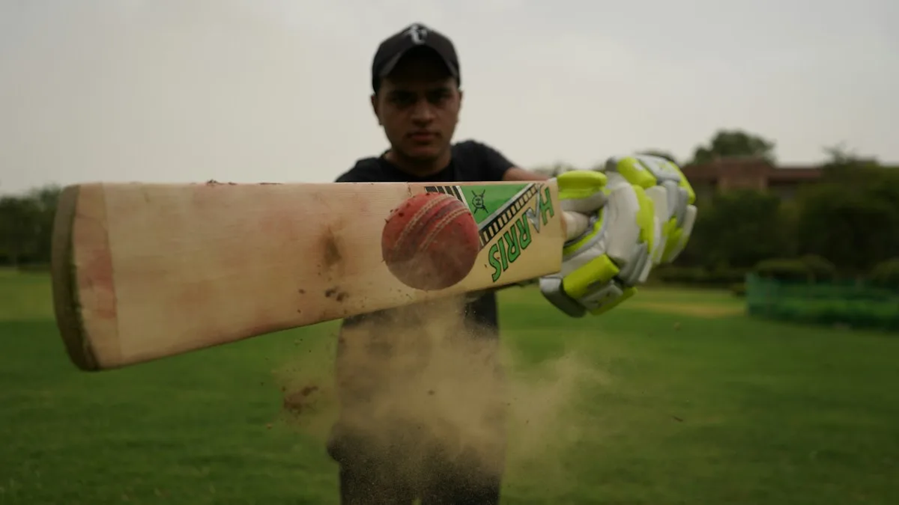
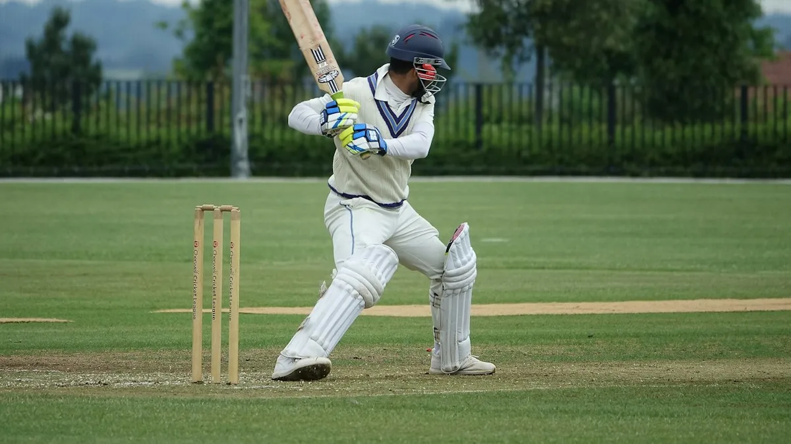
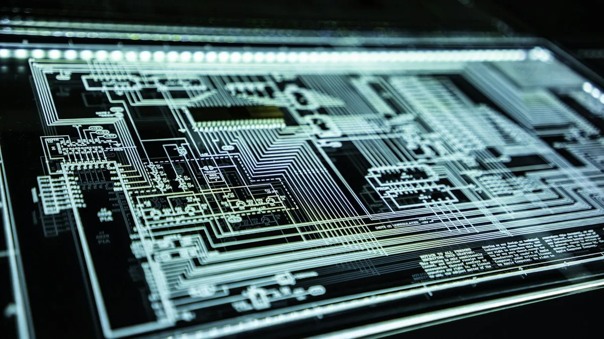
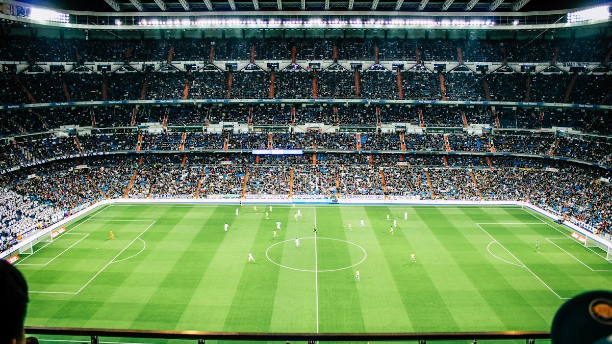
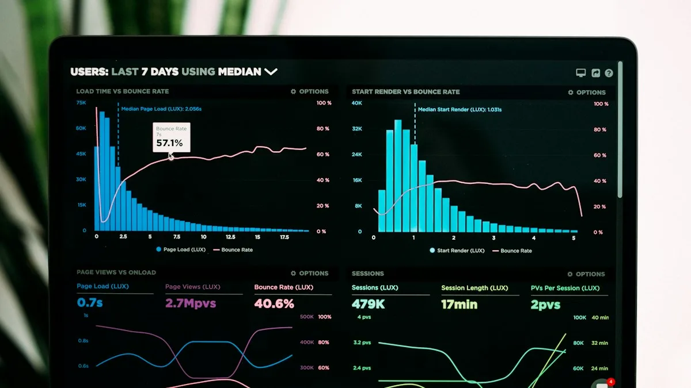

Cricket Analytics
IPL 2026 Season Opener: Tactical Powerplay Analytics & Expected Run Rates
Statistical breakdown of powerplay fielding restrictions, boundary frequencies, and opening strike rates across major venues.
Sharpen your sports trading edge with 20 masterclasses authored by industry analysts: in-play IPL models, European football dynamics, high-definition casino math, and automated banking security.
Statistical breakdown of powerplay fielding restrictions, boundary frequencies, and opening strike rates across major venues.

Player InsightsHow top-order international batters manipulate field placements, manipulate death-over fields, and target specific boundary pockets.

Ground DynamicsExploring moisture retention, evening dew curves, and why toss decisions dictate up to 65% of subcontinental match results.
In-depth statistical review of 50-over ODI tournament dynamics, balance sheets, and key all-rounder impact matchups.
A professional trader's framework for spotting sudden momentum shifts and locking in risk-free profit across both teams.
How automated registration pipelines and dedicated Telegram desks eliminated waiting times for modern sports enthusiasts.
Why seasoned traders start with entry-level commitments to audit latency and liquidity before scaling their exposure.
Inside the security protocols, IMPS banking rails, and automated settlement models powering friction-free withdrawals.
Mathematical analysis showing how peer-to-peer exchange models deliver up to 20% higher returns by removing bookmaker margin.

Cyber SecurityCrucial checklist for spotting unauthorized clone websites, fraudulent bonus traps, and authenticating genuine providers.
Experience 1080p real-dealer tables featuring Teen Patti 20-20, One-Day formats, and high-multiplier side-bet mechanics.
Understanding the 2.7% versus 5.26% house advantage and how certified RNG algorithms ensure provably fair gameplay.
Capitalizing on late-game managerial tactical shifts and defensive fatigue curves to execute precision goal cashouts.

Banking SpeedDemystifying high-speed automated banking pipelines that process user withdrawal tickets directly to bank accounts.
Comprehensive handbook on turf handicapping, win/place pool mechanics, and capitalizing on fixed early market movement.
How enterprise bookmaking partners manage client risk, liquidity pools, credit caps, and rolling commission dividends.

Quantitative MathMathematical proofs of two-way market hedging, automated loss cutting, and why probability beats intuition every time.
Emerging statistical patterns in women's T20 leagues: middle-overs spin chokeholds and clutch lower-order chases.
High-intensity athletic momentum: calculating super tackle probabilities and second-half total point spreads.
Mastering psychological endurance: avoiding emotional loss chasing, over-leveraged stakes, and cognitive bias traps.
Join 100,000+ active players across India. Enjoy 2-minute account activation, ₹100 minimum deposit, 10% welcome bonus, and automated 2-minute instant cashouts.
Connect directly with AnnaBook Official on WhatsApp for instant 2-minute ID creation, deposit, and 24/7 withdrawals!
Enter your ID credentials to enter the exchange